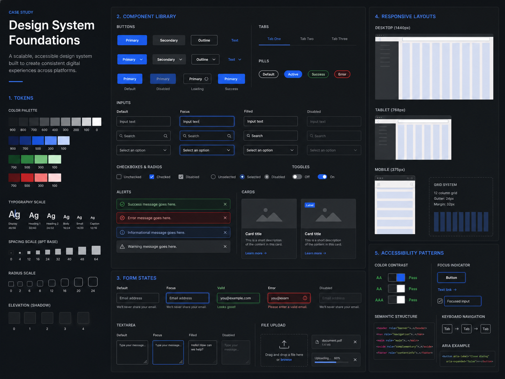

Design System · 2025
跨產品元件系統
Product UI System
建立元件、狀態與響應規則，讓設計與工程團隊用一致語言協作，降低重複決策與維護成本。
- Role
- System design
- Scope
- Tokens, components
- Teams
- Design & engineering
- Status
- Concept case

問題與限制
多個產品各自建立相似元件，造成視覺與互動不一致，也讓工程維護與跨產品移植變得昂貴。
我的角色
盤點介面、定義 token 與元件架構、整理狀態規則，並與工程共同確認命名和採用流程。
限制
- 必須漸進導入，不能一次重寫既有產品。
- 元件需支援不同內容密度與裝置。
- 文件要同時服務設計與工程使用情境。
流程與關鍵決策
- 先從高頻、重複且容易出錯的表單與操作元件開始。
- 把設計 token 與語意狀態分開，避免顏色名稱綁死用途。
- 用 adoption checklist 與版本紀錄降低導入風險。
成果衡量
重複元件數導入前後盤點
採用率產品與頁面覆蓋
交付時間設計到開發比較
反思
設計系統不是元件收藏，而是決策與維護機制。下一步會補上貢獻流程、棄用政策與實際採用數據，讓系統能持續演進。